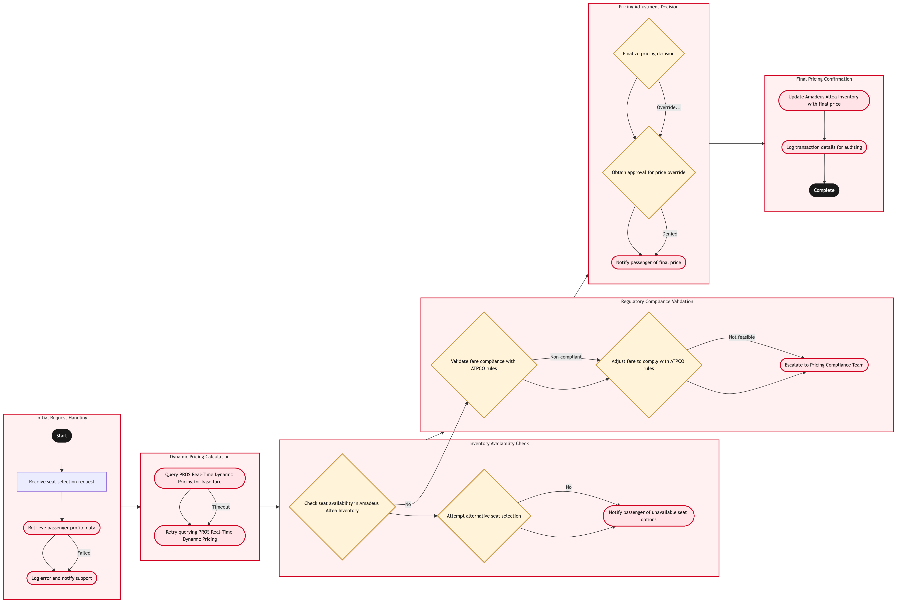

Updated 2026-08-20
Seat Selection Product Pricing
Process flow
Click to zoom

Process steps
▼
Phase 1 — Initial Request Handling
3 steps
| Step | Activity | Role | System | Input | Output | KPI | Dec | Exc | Pain point |
|---|---|---|---|---|---|---|---|---|---|
| 1.1 | Receive seat selection request | Online Booking Agent | Air Canada's Online Booking SystemU | Passenger's seat selection request | Seat selection parameters | Response time < 2 seconds | N | N | High load on booking system during peak times |
| 1.2 | Retrieve passenger profile data | Passenger Data Analyst | Customer Relationship Management System (CRM)U | Passenger ID | Travel history, preferences, and loyalty status | Data retrieval accuracy > 95% | N | Y | Inaccurate or missing CRM data affecting pricing decisions |
| 1.3 | Log error and notify support | IT Support Specialist | Air Canada's IT Incident Management SystemU | Error details | Incident logged and escalated | Resolution time < 1 hour | N | Y | Delayed CRM response impacting passenger experience |
▼
Phase 2 — Dynamic Pricing Calculation
2 steps
| Step | Activity | Role | System | Input | Output | KPI | Dec | Exc | Pain point |
|---|---|---|---|---|---|---|---|---|---|
| 2.1 | Query PROS Real-Time Dynamic Pricing for base fare | Revenue Management Analyst | PROS Real-Time Dynamic PricingA | Seat selection parameters, passenger profile | Base fare estimate | Pricing accuracy > 98% | N | Y | Stale data in PROS affecting pricing calculations |
| 2.2 | Retry querying PROS Real-Time Dynamic Pricing | Revenue Management Analyst | PROS Real-Time Dynamic PricingA | Seat selection parameters, passenger profile | Base fare estimate | Pricing accuracy > 98% | N | Y | Network latency affecting PROS response time |
▼
Phase 3 — Inventory Availability Check
3 steps
| Step | Activity | Role | System | Input | Output | KPI | Dec | Exc | Pain point |
|---|---|---|---|---|---|---|---|---|---|
| 3.1 | Check seat availability in Amadeus Altea Inventory | Operations Control Duty Manager | Amadeus Altea InventoryA | Seat selection parameters, base fare estimate | Seat availability status | Inventory check accuracy > 99% | Y | N | Real-time inventory discrepancies affecting seat booking |
| 3.2 | Attempt alternative seat selection | Online Booking Agent | Air Canada's Online Booking SystemU | Alternative seat parameters | New seat availability status | Alternative selection success rate > 85% | Y | N | Limited alternative seats affecting passenger satisfaction |
| 3.3 | Notify passenger of unavailable seat options | Customer Service Representative | Air Canada's Customer Interaction SystemU | Passenger details, unavailable seat options | Notification sent to passenger | Notification accuracy > 95% | N | Y | Delayed notifications impacting customer experience |
▼
Phase 4 — Regulatory Compliance Validation
3 steps
| Step | Activity | Role | System | Input | Output | KPI | Dec | Exc | Pain point |
|---|---|---|---|---|---|---|---|---|---|
| 4.1 | Validate fare compliance with ATPCO rules | Revenue Compliance Officer | ATPCO Fare Filing SystemU | Base fare estimate, seat availability status | Compliance report | Compliance check accuracy > 98% | Y | N | ATPCO latency affecting pricing decision timelines |
| 4.2 | Adjust fare to comply with ATPCO rules | Revenue Management Analyst | PROS Revenue ManagementB | Non-compliant fare details, ATPCO rules | Adjusted fare estimate | Adjustment success rate > 90% | Y | N | Complex rule adjustments impacting pricing flexibility |
| 4.3 | Escalate to Pricing Compliance Team | Pricing Compliance Manager | Air Canada's IT Incident Management SystemU | Non-feasible compliance details | Compliance team notification | Escalation response time < 30 minutes | N | Y | Delayed escalations affecting pricing accuracy |
▼
Phase 5 — Pricing Adjustment & Decision
3 steps
| Step | Activity | Role | System | Input | Output | KPI | Dec | Exc | Pain point |
|---|---|---|---|---|---|---|---|---|---|
| 5.1 | Finalize pricing decision | Revenue Management Analyst | Air Canada's Pricing Decision SystemU | Adjusted fare estimate, compliance report | Final price for seat selection | Decision accuracy > 97% | Y | N | Manual overrides impacting automated pricing decisions |
| 5.2 | Obtain approval for price override | Pricing Approval Officer | Air Canada's Pricing Approval SystemU | Override request details | Approval status | Override approval time < 10 minutes | Y | N | Delays in obtaining approvals affecting pricing agility |
| 5.3 | Notify passenger of final price | Online Booking Agent | Air Canada's Online Booking SystemU | Final price details | Price confirmation sent to passenger | Notification accuracy > 95% | N | Y | Delayed notifications impacting customer experience |
▼
Phase 6 — Final Pricing Confirmation
2 steps
| Step | Activity | Role | System | Input | Output | KPI | Dec | Exc | Pain point |
|---|---|---|---|---|---|---|---|---|---|
| 6.1 | Update Amadeus Altea Inventory with final price | Operations Control Duty Manager | Amadeus Altea InventoryA | Final price, seat selection parameters | Updated inventory record | Inventory update accuracy > 98% | N | Y | Failed inventory updates affecting seat availability |
| 6.2 | Log transaction details for auditing | Finance Analyst | Air Canada's Financial Transaction SystemU | Final price, passenger details | Transaction log entry | Audit accuracy > 99% | N | Y | Incomplete transaction logs impacting financial auditing |
Swim lanes
Online Booking Agent1.1 3.2 5.3
Passenger Data Analyst1.2
IT Support Specialist1.3
Revenue Management Analyst2.1 2.2 4.2 5.1
Operations Control Duty Manager3.1 6.1
Customer Service Representative3.3
Revenue Compliance Officer4.1
Pricing Compliance Manager4.3
Pricing Approval Officer5.2
Finance Analyst6.2
Systems touched
Air Canada's Online Booking SystemUCustomer Relationship Management System (CRM)UAir Canada's IT Incident Management SystemUPROS Real-Time Dynamic PricingAAmadeus Altea InventoryAAir Canada's Customer Interaction SystemUATPCO Fare Filing SystemUPROS Revenue ManagementBAir Canada's Pricing Decision SystemUAir Canada's Pricing Approval SystemUAir Canada's Financial Transaction SystemU
Key performance indicators
- Response time < 2 seconds
- Pricing accuracy > 98%
- Inventory check accuracy > 99%
- Compliance check accuracy > 98%
- Decision accuracy > 97%
Risks and control points
- High load on booking system during peak times
- Stale data in PROS affecting pricing calculations
- Real-time inventory discrepancies affecting seat booking
- Limited alternative seats affecting passenger satisfaction
- ATPCO latency affecting pricing decision timelines
Air Canada Process Wiki — process and systems reference compiled from public sources
for IT Application Management and User Support pre-sales discovery.
Built 2026-08-21. Every system carries an evidence tier: tier C is an industry pattern and tier U is an open
question, and neither should be asserted as fact about Air Canada without confirmation in discovery.
Not affiliated with or endorsed by Air Canada. Air Canada, Aeroplan and Altitude are trademarks of Air Canada.